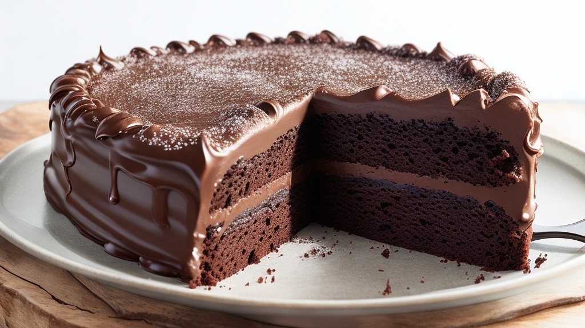

LISTAS ORDENADAS Y DESORDENADAS
RECETA PASTEL DE CHOCOLATE
MENU PRINCIPAL
INGREDIENTES
- 2 tazas de harina
- 1 taza de azúcar
- 1/2 taza de cacao en polvo
- 1/2 taza de mantequilla derretida
- 4 huevos
- 2 cucharaditas de polvo de hornear
- 1 cucharadita de sal
- 1 taza de leche
- 1 taza de chocolate rallado (para decorar)
- Azúcar impalpable (para decorar)
INSTRUCCIONES
- Precalienta el horno a 180°C.
- En un tazón grande, mezcla la harina, azúcar, cacao en polvo, polvo de hornear y sal.
- En otro tazón, bate los huevos y agrega la mantequilla derretida.
- Añade la mezcla de huevos a la mezcla de harina y revuelve hasta que esté bien combinada.
- Agrega la leche y revuelve hasta que la mezcla esté suave.
- Vierte la mezcla en un molde para pastel engrasado.
- Hornea durante 35-40 minutos o hasta que un palillo insertado salga limpio.
- Deja enfriar el pastel durante 10 minutos.
- Desmolda el pastel y colócalo en una rejilla para enfriar completamente.
- Para decorar, espolvorea azúcar impalpable y chocolate rallado sobre el pastel.
- Corta y sirve.
